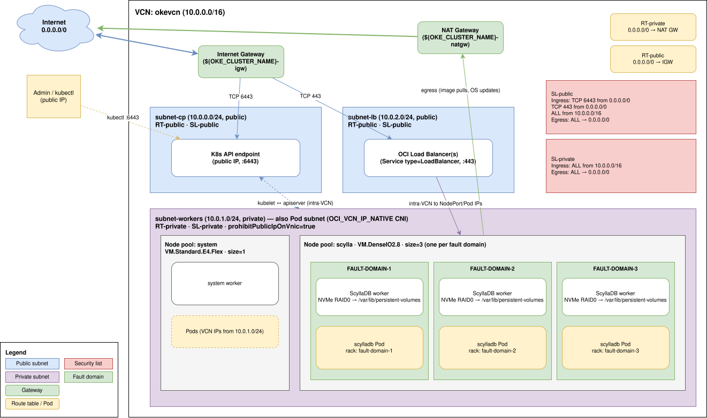

Was this page helpful?
Set up an OKE cluster for ScyllaDB¶
This guide provisions an Oracle Container Engine for Kubernetes (OKE) cluster suitable for running ScyllaDB. At the end, you will have:
A Virtual Cloud Network (VCN) with public and private subnets.
An OKE Enhanced Cluster with VCN-Native Pod Networking.
A general-purpose node pool for system workloads.
A dedicated Dense I/O node pool for ScyllaDB with the static CPU manager policy enabled.
Tip
All the steps in this guide are also available as a single executable script:
examples/oke/setup-oke-cluster.sh.
Set OCI_REGION and OCI_COMPARTMENT_OCID, then run the script to provision everything in one go.
Prerequisites¶
An Oracle Cloud Infrastructure account with permissions to create networking, Container Engine, and Compute resources in a target compartment.
The
ociCLI installed and configured (oci setup config).kubectlinstalled.A Dense I/O instance shape (e.g.,
VM.DenseIO2.8) available in your target region with capacity for 3 worker nodes. See ScyllaDB cloud instance recommendations for OCI for recommended shapes and system requirements for minimum specifications.
Set environment variables¶
The rest of the guide refers to the variables defined here.
Set your OCI region and compartment — these have no defaults and must be provided:
# You can list compartments with: oci iam compartment list --all
export OCI_REGION="<your-region>" # e.g. us-sanjose-1
export OCI_COMPARTMENT_OCID="<your-compartment>" # e.g. ocid1.compartment.oc1..aaaa...
The remaining variables have sensible defaults and can be copied as-is. Override any value before running if needed:
# Names used for the resources created below.
export OKE_CLUSTER_NAME="${OKE_CLUSTER_NAME:-scylladb-demo}"
export OKE_VCN_NAME="${OKE_CLUSTER_NAME}-vcn"
# Compute shapes.
# General-purpose pool runs system workloads (operator, cert-manager, etc.).
export GENERAL_NODE_SHAPE="${GENERAL_NODE_SHAPE:-VM.Standard.E4.Flex}"
export GENERAL_NODE_OCPUS="${GENERAL_NODE_OCPUS:-2}"
export GENERAL_NODE_MEMORY_GBS="${GENERAL_NODE_MEMORY_GBS:-16}"
# Dedicated ScyllaDB pool. Dense I/O shapes provide local NVMe SSDs.
# See https://docs.oracle.com/en-us/iaas/Content/Compute/References/computeshapes.htm#vm-dense
export SCYLLA_NODE_SHAPE="${SCYLLA_NODE_SHAPE:-VM.DenseIO2.8}"
Discover and pin the latest Kubernetes version supported by OKE in your region:
export K8S_VERSION="$(
oci ce cluster-options get \
--cluster-option-id all \
--region "${OCI_REGION}" \
--query 'data."kubernetes-versions" | sort(@) | [-1]' --raw-output
)"
echo "K8S_VERSION=${K8S_VERSION}"
The first availability domain in the region is used in the commands below. Capture it:
export OCI_AD="$(
oci iam availability-domain list \
--region "${OCI_REGION}" \
--compartment-id "${OCI_COMPARTMENT_OCID}" \
--query 'data[0].name' --raw-output
)"
echo "OCI_AD=${OCI_AD}"
Note
In single-AD regions (such as us-sanjose-1), high availability for ScyllaDB is achieved by spreading nodes across the three fault domains within the AD (FAULT-DOMAIN-1, FAULT-DOMAIN-2, FAULT-DOMAIN-3).
The ScyllaCluster manifest in the reference deployment uses one rack per fault domain.
Create the network¶
OKE requires a VCN with appropriate subnets, gateways, route tables, and security rules. The topology created in this section is the minimum needed for an OKE cluster with VCN-Native Pod Networking and a public Kubernetes API endpoint. This guide uses a public API endpoint for simplicity; for production environments, consider using a private endpoint instead. For full background on the supported topologies, see the Container Engine for Kubernetes Networking reference.
The resources created are:
a VCN (
10.0.0.0/16),an Internet Gateway and a NAT Gateway,
a public route table (default route → IGW) and a private route table (default route → NAT GW),
a public security list (ingress TCP
6443and443from anywhere, plus all intra-VCN traffic) and a private security list (ingress all from inside the VCN),three regional subnets — control plane, workers, and Kubernetes Service load balancers.

OKE reference network architecture.¶
Create the VCN¶
oci network vcn create \
--region "${OCI_REGION}" \
--compartment-id "${OCI_COMPARTMENT_OCID}" \
--display-name "${OKE_VCN_NAME}" \
--cidr-blocks '["10.0.0.0/16"]' \
--dns-label 'okevcn'
export OKE_VCN_OCID="$(
oci network vcn list \
--region "${OCI_REGION}" \
--compartment-id "${OCI_COMPARTMENT_OCID}" \
--display-name "${OKE_VCN_NAME}" \
--query 'data[0].id' --raw-output
)"
See also
Creating a VCN in the OCI documentation.
Create the gateways¶
An Internet Gateway for the public subnets and a NAT Gateway so private worker nodes can reach the public Internet for image pulls and OS updates:
oci network internet-gateway create \
--region "${OCI_REGION}" \
--compartment-id "${OCI_COMPARTMENT_OCID}" \
--vcn-id "${OKE_VCN_OCID}" \
--is-enabled true \
--display-name "${OKE_CLUSTER_NAME}-igw"
oci network nat-gateway create \
--region "${OCI_REGION}" \
--compartment-id "${OCI_COMPARTMENT_OCID}" \
--vcn-id "${OKE_VCN_OCID}" \
--display-name "${OKE_CLUSTER_NAME}-natgw"
export OKE_IGW_OCID="$(oci network internet-gateway list --region "${OCI_REGION}" --compartment-id "${OCI_COMPARTMENT_OCID}" --vcn-id "${OKE_VCN_OCID}" --query 'data[0].id' --raw-output)"
export OKE_NATGW_OCID="$(oci network nat-gateway list --region "${OCI_REGION}" --compartment-id "${OCI_COMPARTMENT_OCID}" --vcn-id "${OKE_VCN_OCID}" --query 'data[0].id' --raw-output)"
See also
Internet Gateway and NAT Gateway in the OCI documentation.
Create the route tables¶
A public route table sending 0.0.0.0/0 to the Internet Gateway, and a private route table sending 0.0.0.0/0 to the NAT Gateway:
oci network route-table create \
--region "${OCI_REGION}" \
--compartment-id "${OCI_COMPARTMENT_OCID}" \
--vcn-id "${OKE_VCN_OCID}" \
--display-name "${OKE_CLUSTER_NAME}-rt-public" \
--route-rules "[{\"destination\": \"0.0.0.0/0\", \"destinationType\": \"CIDR_BLOCK\", \"networkEntityId\": \"${OKE_IGW_OCID}\"}]"
oci network route-table create \
--region "${OCI_REGION}" \
--compartment-id "${OCI_COMPARTMENT_OCID}" \
--vcn-id "${OKE_VCN_OCID}" \
--display-name "${OKE_CLUSTER_NAME}-rt-private" \
--route-rules "[{\"destination\": \"0.0.0.0/0\", \"destinationType\": \"CIDR_BLOCK\", \"networkEntityId\": \"${OKE_NATGW_OCID}\"}]"
export OKE_PUBLIC_RT_OCID="$(oci network route-table list --region "${OCI_REGION}" --compartment-id "${OCI_COMPARTMENT_OCID}" --vcn-id "${OKE_VCN_OCID}" --display-name "${OKE_CLUSTER_NAME}-rt-public" --query 'data[0].id' --raw-output)"
export OKE_PRIVATE_RT_OCID="$(oci network route-table list --region "${OCI_REGION}" --compartment-id "${OCI_COMPARTMENT_OCID}" --vcn-id "${OKE_VCN_OCID}" --display-name "${OKE_CLUSTER_NAME}-rt-private" --query 'data[0].id' --raw-output)"
See also
VCN Route Tables in the OCI documentation.
Create the security lists¶
Two security lists are created here: a public one (Kubernetes API and Service load balancers from the Internet, plus all intra-VCN traffic) and a private one (intra-VCN only). For deployments with a tighter security posture, prefer the more granular Network Security Groups (NSGs) documented in the OKE network resource configuration guide.
# Public security list: allows HTTPS to the Kubernetes API endpoint (6443)
# and to Service-type=LoadBalancer load balancers (443) from anywhere, plus
# unrestricted intra-VCN traffic.
oci network security-list create \
--region "${OCI_REGION}" \
--compartment-id "${OCI_COMPARTMENT_OCID}" \
--vcn-id "${OKE_VCN_OCID}" \
--display-name "${OKE_CLUSTER_NAME}-sl-public" \
--egress-security-rules '[{"destination": "0.0.0.0/0", "destinationType": "CIDR_BLOCK", "protocol": "all", "isStateless": false}]' \
--ingress-security-rules '[
{"source": "0.0.0.0/0", "sourceType": "CIDR_BLOCK", "protocol": "6", "isStateless": false, "tcpOptions": {"destinationPortRange": {"min": 6443, "max": 6443}}},
{"source": "0.0.0.0/0", "sourceType": "CIDR_BLOCK", "protocol": "6", "isStateless": false, "tcpOptions": {"destinationPortRange": {"min": 443, "max": 443}}},
{"source": "10.0.0.0/16","sourceType": "CIDR_BLOCK", "protocol": "all", "isStateless": false}
]'
# Private security list: allows all intra-VCN traffic; egress everywhere.
oci network security-list create \
--region "${OCI_REGION}" \
--compartment-id "${OCI_COMPARTMENT_OCID}" \
--vcn-id "${OKE_VCN_OCID}" \
--display-name "${OKE_CLUSTER_NAME}-sl-private" \
--egress-security-rules '[{"destination": "0.0.0.0/0", "destinationType": "CIDR_BLOCK", "protocol": "all", "isStateless": false}]' \
--ingress-security-rules '[
{"source": "10.0.0.0/16", "sourceType": "CIDR_BLOCK", "protocol": "all", "isStateless": false}
]'
export OKE_PUBLIC_SL_OCID="$(oci network security-list list --region "${OCI_REGION}" --compartment-id "${OCI_COMPARTMENT_OCID}" --vcn-id "${OKE_VCN_OCID}" --display-name "${OKE_CLUSTER_NAME}-sl-public" --query 'data[0].id' --raw-output)"
export OKE_PRIVATE_SL_OCID="$(oci network security-list list --region "${OCI_REGION}" --compartment-id "${OCI_COMPARTMENT_OCID}" --vcn-id "${OKE_VCN_OCID}" --display-name "${OKE_CLUSTER_NAME}-sl-private" --query 'data[0].id' --raw-output)"
See also
Security Lists in the OCI documentation.
Create the subnets¶
Three regional subnets, all /24:
subnet-cp— public, hosts the Kubernetes API endpoint.subnet-workers— private, hosts worker nodes and Pods.subnet-lb— public, hosts load balancers fronting Kubernetes Services of typeLoadBalancer.
# Control-plane subnet (public).
oci network subnet create \
--region "${OCI_REGION}" \
--compartment-id "${OCI_COMPARTMENT_OCID}" \
--vcn-id "${OKE_VCN_OCID}" \
--display-name "${OKE_CLUSTER_NAME}-subnet-cp" \
--cidr-block '10.0.0.0/24' \
--dns-label 'cp' \
--route-table-id "${OKE_PUBLIC_RT_OCID}" \
--security-list-ids "[\"${OKE_PUBLIC_SL_OCID}\"]" \
--prohibit-public-ip-on-vnic false
# Worker (and pod) subnet (private).
oci network subnet create \
--region "${OCI_REGION}" \
--compartment-id "${OCI_COMPARTMENT_OCID}" \
--vcn-id "${OKE_VCN_OCID}" \
--display-name "${OKE_CLUSTER_NAME}-subnet-workers" \
--cidr-block '10.0.1.0/24' \
--dns-label 'workers' \
--route-table-id "${OKE_PRIVATE_RT_OCID}" \
--security-list-ids "[\"${OKE_PRIVATE_SL_OCID}\"]" \
--prohibit-public-ip-on-vnic true
# Service-LB subnet (public).
oci network subnet create \
--region "${OCI_REGION}" \
--compartment-id "${OCI_COMPARTMENT_OCID}" \
--vcn-id "${OKE_VCN_OCID}" \
--display-name "${OKE_CLUSTER_NAME}-subnet-lb" \
--cidr-block '10.0.2.0/24' \
--dns-label 'lb' \
--route-table-id "${OKE_PUBLIC_RT_OCID}" \
--security-list-ids "[\"${OKE_PUBLIC_SL_OCID}\"]" \
--prohibit-public-ip-on-vnic false
export OKE_CP_SUBNET_OCID="$( oci network subnet list --region "${OCI_REGION}" --compartment-id "${OCI_COMPARTMENT_OCID}" --vcn-id "${OKE_VCN_OCID}" --display-name "${OKE_CLUSTER_NAME}-subnet-cp" --query 'data[0].id' --raw-output)"
export OKE_WORKERS_SUBNET_OCID="$(oci network subnet list --region "${OCI_REGION}" --compartment-id "${OCI_COMPARTMENT_OCID}" --vcn-id "${OKE_VCN_OCID}" --display-name "${OKE_CLUSTER_NAME}-subnet-workers" --query 'data[0].id' --raw-output)"
export OKE_LB_SUBNET_OCID="$( oci network subnet list --region "${OCI_REGION}" --compartment-id "${OCI_COMPARTMENT_OCID}" --vcn-id "${OKE_VCN_OCID}" --display-name "${OKE_CLUSTER_NAME}-subnet-lb" --query 'data[0].id' --raw-output)"
See also
Creating a Subnet in the OCI documentation.
Create the OKE cluster¶
oci ce cluster create \
--region "${OCI_REGION}" \
--compartment-id "${OCI_COMPARTMENT_OCID}" \
--vcn-id "${OKE_VCN_OCID}" \
--name "${OKE_CLUSTER_NAME}" \
--kubernetes-version "${K8S_VERSION}" \
--type ENHANCED_CLUSTER \
--endpoint-subnet-id "${OKE_CP_SUBNET_OCID}" \
--endpoint-public-ip-enabled true \
--service-lb-subnet-ids "[\"${OKE_LB_SUBNET_OCID}\"]" \
--cluster-pod-network-options '[{"cniType": "OCI_VCN_IP_NATIVE"}]' \
--max-wait-seconds 1800 --wait-interval-seconds 30 \
--wait-for-state SUCCEEDED \
--wait-for-state FAILED
export OKE_CLUSTER_OCID="$(
oci ce cluster list \
--region "${OCI_REGION}" \
--compartment-id "${OCI_COMPARTMENT_OCID}" \
--name "${OKE_CLUSTER_NAME}" \
--lifecycle-state ACTIVE \
--query 'data[0].id' --raw-output
)"
See also
Creating a Cluster in the OCI documentation.
Discover the worker node image¶
OKE publishes pre-baked Oracle Linux images for each supported Kubernetes version.
Pick the latest one matching K8S_VERSION:
K8S_VERSION_BARE="${K8S_VERSION#v}"
# shellcheck disable=SC2016
OKE_IMAGE_QUERY=$(printf 'max_by(data.sources[?contains("source-name",`Oracle-Linux-8.`) && contains("source-name",`-OKE-%s-`) && !contains("source-name",`aarch64`) && !contains("source-name",`GPU`)], &"source-name")."image-id"' "${K8S_VERSION_BARE}")
export OKE_NODE_IMAGE_OCID="$(
oci ce node-pool-options get \
--node-pool-option-id "${OKE_CLUSTER_OCID}" \
--region "${OCI_REGION}" \
--query "${OKE_IMAGE_QUERY}" \
--raw-output
)"
echo "OKE_NODE_IMAGE_OCID=${OKE_NODE_IMAGE_OCID}"
Create the general-purpose node pool¶
This pool runs system components (cert-manager, ScyllaDB Operator, etc.):
oci ce node-pool create \
--region "${OCI_REGION}" \
--compartment-id "${OCI_COMPARTMENT_OCID}" \
--cluster-id "${OKE_CLUSTER_OCID}" \
--name 'system' \
--kubernetes-version "${K8S_VERSION}" \
--node-shape "${GENERAL_NODE_SHAPE}" \
--node-shape-config "{\"ocpus\": ${GENERAL_NODE_OCPUS}, \"memoryInGBs\": ${GENERAL_NODE_MEMORY_GBS}}" \
--node-source-details "{\"sourceType\": \"IMAGE\", \"imageId\": \"${OKE_NODE_IMAGE_OCID}\", \"bootVolumeSizeInGBs\": 50}" \
--placement-configs "[{\"availabilityDomain\": \"${OCI_AD}\", \"subnetId\": \"${OKE_WORKERS_SUBNET_OCID}\"}]" \
--pod-subnet-ids "[\"${OKE_WORKERS_SUBNET_OCID}\"]" \
--size 1 \
--max-wait-seconds 1800 --wait-interval-seconds 30 \
--wait-for-state SUCCEEDED \
--wait-for-state FAILED
Create the dedicated ScyllaDB node pool¶
This pool is dedicated to ScyllaDB workloads. The Cloud-Init script enables the static CPU manager policy, which is required for CPU pinning.
CLOUD_INIT_BASE64="$(base64 -w0 <<'EOF'
#!/bin/bash
set -euo pipefail
curl --fail -H "Authorization: Bearer Oracle" -L0 \
http://169.254.169.254/opc/v2/instance/metadata/oke_init_script \
| base64 --decode > /var/run/oke-init.sh
bash /var/run/oke-init.sh --kubelet-extra-args "--cpu-manager-policy=static"
EOF
)"
oci ce node-pool create \
--region "${OCI_REGION}" \
--compartment-id "${OCI_COMPARTMENT_OCID}" \
--cluster-id "${OKE_CLUSTER_OCID}" \
--name 'scylla' \
--kubernetes-version "${K8S_VERSION}" \
--node-shape "${SCYLLA_NODE_SHAPE}" \
--node-source-details "{\"sourceType\": \"IMAGE\", \"imageId\": \"${OKE_NODE_IMAGE_OCID}\", \"bootVolumeSizeInGBs\": 50}" \
--placement-configs "[
{\"availabilityDomain\": \"${OCI_AD}\", \"subnetId\": \"${OKE_WORKERS_SUBNET_OCID}\", \"faultDomains\": [\"FAULT-DOMAIN-1\", \"FAULT-DOMAIN-2\", \"FAULT-DOMAIN-3\"]}
]" \
--pod-subnet-ids "[\"${OKE_WORKERS_SUBNET_OCID}\"]" \
--size 3 \
--initial-node-labels '[{"key": "scylla.scylladb.com/node-type", "value": "scylla"}]' \
--node-metadata "{\"user_data\": \"${CLOUD_INIT_BASE64}\"}" \
--max-wait-seconds 1800 --wait-interval-seconds 30 \
--wait-for-state SUCCEEDED \
--wait-for-state FAILED
Note
OKE’s node-pool create API does not accept Kubernetes node taints directly.
The taint is applied via kubectl after the kubeconfig is fetched.
See also
Creating a Node Pool in the OCI documentation.
Get cluster credentials¶
oci ce cluster create-kubeconfig \
--region "${OCI_REGION}" \
--cluster-id "${OKE_CLUSTER_OCID}" \
--file "${HOME}/.kube/config" \
--token-version '2.0.0' \
--kube-endpoint PUBLIC_ENDPOINT
Verify connectivity and node readiness:
kubectl get nodes -L scylla.scylladb.com/node-type -L oci.oraclecloud.com/fault-domain
Example expected output:
NAME STATUS ROLES AGE VERSION NODE-TYPE FAULT-DOMAIN
10.0.1.10 Ready node 10m v1.32.1 FAULT-DOMAIN-1
10.0.1.20 Ready node 5m v1.32.1 scylla FAULT-DOMAIN-1
10.0.1.21 Ready node 5m v1.32.1 scylla FAULT-DOMAIN-2
10.0.1.22 Ready node 5m v1.32.1 scylla FAULT-DOMAIN-3
See also
Downloading a kubeconfig File in the OCI documentation.
Taint the dedicated ScyllaDB nodes¶
Use the label applied at node-pool creation to select the dedicated nodes and apply the matching taint:
kubectl taint nodes -l 'scylla.scylladb.com/node-type=scylla' \
scylla-operator.scylladb.com/dedicated=scyllaclusters:NoSchedule --overwrite
Clean up¶
To tear down the infrastructure created by this guide, delete the OKE cluster first (this also deletes its node pools):
oci ce cluster delete \
--region "${OCI_REGION}" \
--cluster-id "${OKE_CLUSTER_OCID}" \
--force \
--wait-for-state SUCCEEDED \
--wait-for-state FAILED
Then delete the network resources in reverse order of creation:
oci network subnet delete --region "${OCI_REGION}" --subnet-id "${OKE_LB_SUBNET_OCID}" --force --wait-for-state TERMINATED
oci network subnet delete --region "${OCI_REGION}" --subnet-id "${OKE_WORKERS_SUBNET_OCID}" --force --wait-for-state TERMINATED
oci network subnet delete --region "${OCI_REGION}" --subnet-id "${OKE_CP_SUBNET_OCID}" --force --wait-for-state TERMINATED
oci network security-list delete --region "${OCI_REGION}" --security-list-id "${OKE_PUBLIC_SL_OCID}" --force --wait-for-state TERMINATED
oci network security-list delete --region "${OCI_REGION}" --security-list-id "${OKE_PRIVATE_SL_OCID}" --force --wait-for-state TERMINATED
oci network route-table delete --region "${OCI_REGION}" --rt-id "${OKE_PRIVATE_RT_OCID}" --force --wait-for-state TERMINATED
oci network route-table delete --region "${OCI_REGION}" --rt-id "${OKE_PUBLIC_RT_OCID}" --force --wait-for-state TERMINATED
oci network nat-gateway delete --region "${OCI_REGION}" --nat-gateway-id "${OKE_NATGW_OCID}" --force --wait-for-state TERMINATED
oci network internet-gateway delete --region "${OCI_REGION}" --ig-id "${OKE_IGW_OCID}" --force --wait-for-state TERMINATED
oci network vcn delete --region "${OCI_REGION}" --vcn-id "${OKE_VCN_OCID}" --force --wait-for-state TERMINATED
Next steps¶
Follow the Reference deployment: OKE for a complete ScyllaDB deployment on this cluster.